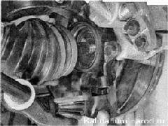
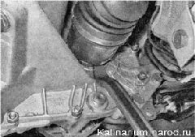

Привод переднего колеса - снятие и установкаДля выполнения работы потребуются: — смотровая канава или эстакада; — новая гайка ступицы; — новое стопорное кольцо хвостовика внутреннего шарнира. Снятие 1. Подготавливаем автомобиль к выполнению работы (см. «Подготовка автомобиля к техническому обслуживанию и ремонту».) 2. Снимаем брызговик двигателя. 3. Сливаем масло из коробки передач. 4. Снимаем колпак ступицы и ослабляем затяжку гайки ступицы. 5. Ослабляем затяжку болтов крепления колеса. 6. Устанавливаем автомобиль на надежную подставку и снимаем переднее колесо. 7. Ослабляем затяжку трех самоконтрящихся гаек крепления верхней опоры стойки подвески и отворачиваем гайки на несколько оборотов. 8. Торцовым ключом на 17 мм отворачиваем два болта крепления шаровой опоры к поворотному кулаку. 9. Торцовым ключом на 30 мм окончательно отворачиваем гайку ступицы колеса 10. Извлекаем хвостовик наружного шарнира из ступицы. При необходимости выбиваем его через деревянный брусок или выпрессовываем при помощи универсального трёхзахватного съемника. При снятии левого привода поворачиваем рулевое колесо до упора вправо; при снятии правого привода поворачиваем рулевое колесо до упора влево. 11. Вынимаем тормозной шланг из кронштейна на стойке подвески. Осторожно, не допуская сильного натяжения тормозного шланга, оттягиваем нижнюю часть стойки наружу, извлекаем хвостовик наружного шарнира из ступицы и осторожно опускаем привод на поперечный рычаг подвески. 12. Используя монтажную лопатку как рычаг (упираясь ее концом в торец корпуса внутреннего шарнира), сдвигаем шарнир в наружную сторону, преодолевая сопротивление стопорного кольца. 13. Поддерживая внутренний шарнир, аккуратно (стараясь не повредить шлицами хвостовика шарнира сальник привода) извлекаем шарнир из коробки передач и снимаем привод в сборе с автомобиля. Установка 1. Заменяем стопорное кольцо шлицевого хвостовика корпуса внутреннего шарнира новым. 2. Наносим пластичную смазку на шлицевую и гладкую поверхности хвостовика. 3. Аккуратно вставляем хвостовик в сальник, стараясь не повредить шлицами вала рабочую кромку сальника. При этом направляем стопорное кольцо зазором вверх. 4. Энергично вставляем привод в коробку передач и обязательно убеждаемся, что стопорное кольцо хвостовика внутреннего шарнира надежно зафиксировалось и привод не выдвигается из картера коробки передач. 5. Дальнейшую работу выполняем в последовательности, обратной разборке. При сборке необходимо установить новую гайку ступицы. |